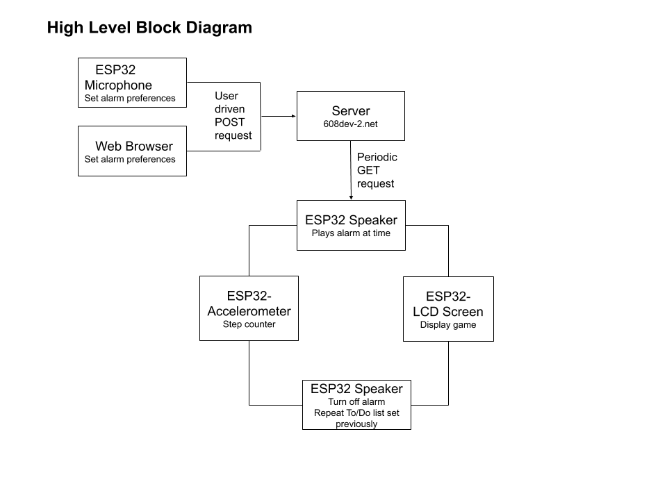
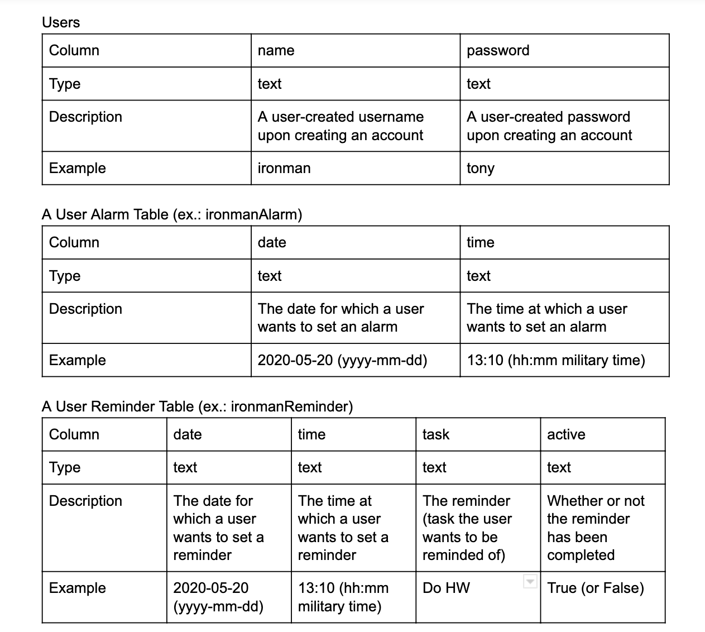
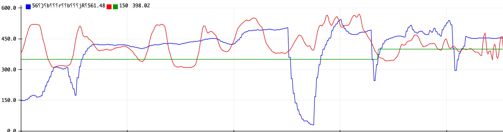
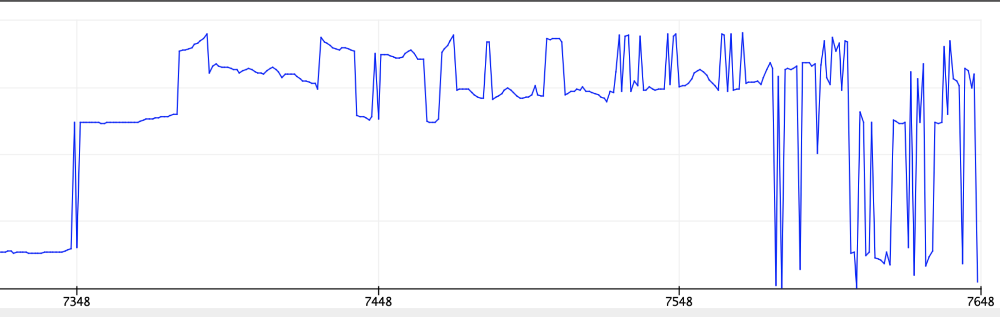
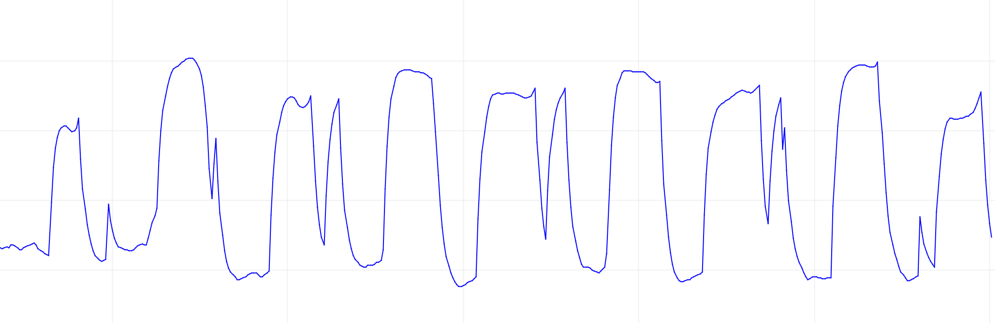
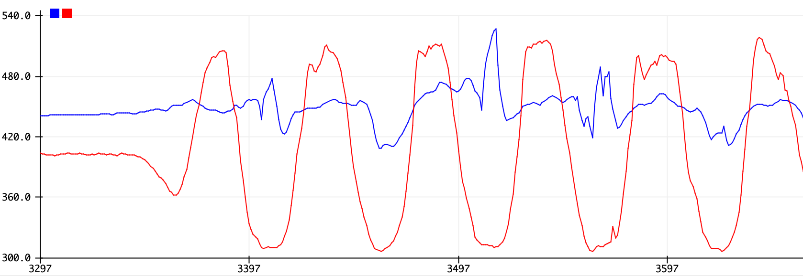
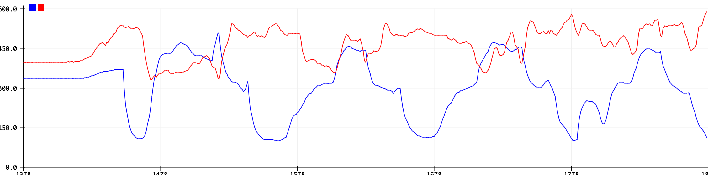
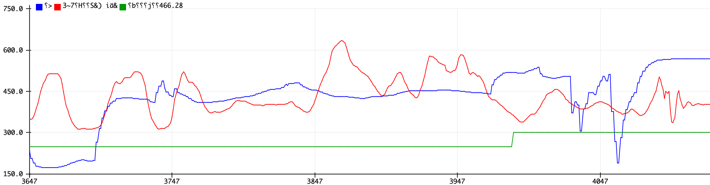

**6.08 Team 10 Final Project**
**Ayesha Ali, Audrey Li, Shreya Karpoor, Anna Sun**
Synopsis
===============================================================================
Many people struggle with waking up in the morning even with an alarm. The temptation to just hit the snooze button and go back to sleep is strong. Modern day alarm apps, like the iOS clock app, do not provide an incentive to actually get out of bed. We have developed a solution to this problem. The overall goal of our project is to create an alarm clock with multiple features. Users will be able to pick and choose from different features they would like to wake them up so they will be motivated to start the day. With full functionality of setting/deleting alarms through a voice command or on the web (and curating daily to-do lists and reminders!), the user can choose from two wake-up options. One, the user can play a game, like cup pong; once you score, the alarm turns off. Two, the user can choose to do a physical activity out of a set of exercises and feel refreshed and awake at the start of their day. To incentivize quick completion of the tasks, the alarm ringtone will play until a certain task is completed.
**Video Demo**
===================================================================
**Functional Block Diagram**
===================================================================

**System Components**
===================================================================
Web App
---------------------------------------------------------------
The web app allows users to create/sign into their accounts and view their alarms and reminders. We implemented this using an HTML form and POST request. Once a POST request is made (a user clicks create account after entering a username and password), we call the function `handle_create()`. In it, we connect to our database and check in our "users" table if the user already exists. If it doesn't, we insert the user into the users table and create a new table specific to the user that will eventually store their alarms. We then render the alarms page. If it does, then we rerender the login page and provide feedback ("That username is taken, please try again").
Once a user has created an account, they should be able to login to it. To implement login functionality, we used an HTML form and a GET request. Once a user makes the GET request, the request handler checks to see if a username and password were sent in the `values` of the request. If so, we call the function `handle_login()` which will connect to the database and check if the username and password exist in the users table. If it doesn't, we rerender the login page with the feedback "Either your username or password is incorrect, please try again". Otherwise, we render the alarms page.
After the user logs in, they will be able to see a form that lets them enter in date, time, and the task they want to be reminded about. They can fill out that form accordingly. Once they submit this form, it will call on a POST request that passes form values to the `post_alarm` function. This function inserts the new task to that specific user's own data table in the database. Then, they can go back and refresh the page, the form will populate a Past Alarms table that is called by `display_alarms` (this is called every time a user logs in). In this table, the user can see all the past alarms they have set before.
Similarly, the user can set reminders in the web app. When a POST request is made, the following `post_reminder()` function is called. The reminder is added to a table of reminders specific to the user that has date, time, task, and active/inactive fields. When a reminder is first submitted, it is automatically set as active. To display these on the web app, we select all reminders from the user's reminder table. When we render them in the html, all the active reminders are put in the first table and all of the completed ones in the second. Each row in the first table has an additional column that has a "Complete" button. That button is connected to a form that makes a POST request to the server. When this request is made, the following function `complete_reminder()` is called. The body of the post request holds the date, time, and task of the reminder so we can select the correct reminder from the table. We update and set the active field of this table to false, so that when we render the page again the reminder will show up in the completed reminders table.
ESP Alarm: Getting and Setting
---------------------------------------------------------------
Similar to the Web App, the user can also utilize the ESP to set alarms and reminders that can be later displayed from their online account. The user presses the button on the ESP at any time and set their alarm or reminder through voice commands.
Using the Google speech to text API, these voice commands will be translated to strings, and posted so that it can then be parsed in parsing_transcript.py. In parsing_transcript.py, the transcript is taken in and parsed, searching for key characters like ":", "o'clock", days of the week, months and other special cases. The data will be parsed into hour, minute, day, month, year, and an optional reminder, which will then be re-formatted to be stored in the database that the Web App will access.
The user will not have to worry about the order they say their information. For example, the program will be able to detect the date if the user says “set alarm at 3 pm on wednesday” and also “set alarm at 3 pm on april 23", converting it to a standard date format. The Web App will display these alarms online and place the correct information of time and date of the alarm along with a reminder if it exists.
Jumping Jacks
---------------------------------------------------------------
The first task that users can choose is by doing jumping jacks. Once the user has done 10 jumping jacks, the alarm when turn off. This task has the following main components:
1) Calibrating the user's thresholds: After collecting data and testing, we discovered that using a combination of measuring the y-angle, z-angle, and average acceleration would be enough to accurately detect a jumping jack and distinguish a jumping jack from a jump. After graphing the x, y, z angles, we realized that the patterns between the x and z angles were very similar, so we chose to just use the z angle. In the graphs, the z angle showed up as a peak-trough-peak or a trough-peak-trough when considering the magnitude of the angle. As the graphs could go both ways, we decided the best way to measure if a jumping jack was done was if there was a certain magnitude difference in the graph, signaling that a peak-trough-peak or a trough-peak-trough had been completed for the z angle specifically.
After plotting the data, we also discovered that the trends between these values was similar for all users; however, individual threshold values were different. Therefore, we calibrate the thresholds to each user first by asking the user to do 3 jumping jacks in the beginning.
a) To calibrate acceleration: we take the maximum and minimum acceleration of each jumping jack and average them individually. The peak threshold is then 0.8*avg_maximum and the trough threshold is then 1.4*avg_minimum.
b) To calibrate y-angle: to detect peaks in the y-angle, we take the maximum y-angle value of each jumping jack and average them individually. The peak threshold is then 0.7*avg_maximum.
c) To calibrate z-angle: we measure the z-angle difference by finding the difference between the maximum z-angle and minimum z-angle for each jumping jack and averaging these differences. The z-angle difference is then 0.8*avg_angle_difference.
2) Counting jumping jacks: We then did test jumping jacks and jumps to see what the graph looked like and how our step counter acted for each one. The differnece between a jump and a jumping jack was that in a jumping jack, there were at least 2 y-angle and z-angle peaks in between the peak-trough-peak of the acceleration graph while there was only one in a jumping jack. We are detecting multiple y and z peaks throughout the span of the peak-trough-peak of the acceleration graph to detect the jumping jack.
Cup Pong
---------------------------------------------------------------
The other task that users can choose is cup pong, which involves throwing a ball (by tossing the board) and land it in a cup. This had several main components.
1) Calculating the distance the ball traveled: We first took the acceleration from the imu. We determined that since the user is flinging/tossing the board to mimic throwing the ball, we will mainly use the y and z direction acceleration to determine how far the ball is moving. Then, similar to step counter exercise, we averaged it over the past three values to mimic the impact noise has on the data. When playing the game, user will first tilt the board, then press the first button, which sets angle x and angle y. Then, as they toss the board, the system will watch for max acceleration, then after the toss motion completes, the ball will move in the direction correspondingly. The scale factors we have applied to the inputs in `game.step()` are to scale the force so that a small throw reaches the foremost cups and a strong throw reaches the last row or bounces off the walls.
2) Detect ball landing in a cup: We checked to see if the ball is completely within a cup by checking their center alignments. Instead of removing a cup from the screen, we decided that it would be best to mark the cups that the user has hit in green so they can more clearly see their successes in the game and the cups they have left to hit. After each throw, the user can press the reset button to clear the last ball off the board, but it will keep tracking the user's score.
3) Make ball change size as it moves/make design user-friendly: We added a mod radius function in the ball class. We scaled it based on 500 steps and it uses the steps that ball is at between 0 and 500 to set a radius for the ball, so it appears to be the larger when it's closer to the user. We also modified our step function, so that we realize "slow motion" for the ball. We put in more delay at the top of the curve, so that the user can actually see the path of the ball.
**Server Side: Python File Descriptions**
===================================================================
main.py
-------------------------------------------------------------------------------
This file contains several important functions.
1. `handle_create()` and `handle_login()` takes GET/POST requests, check user name and password, then lets the user into their own webform.
2. `post_alarm()` and `post_reminder()` inserts alarms/reminders a user added to their own database.
3. `display_alarms()` takes several inputs, which specify user/password, whether this is a request from the ESP, and whether the user is setting an alarm or a reminder. According to each input, it gets the current day and time, and then gets all uncompleted/active reminders the user still needs to do when an alarm rings.
html_render.py
-------------------------------------------------------------------------------
This has all the html scripts for the webform, which includes the login/create account page for the user to type in user name and password; the setting alarm/reminder section for the user to set a time, date, and task for the alarm/reminder; and the tables for displaying complete (active)/incomplete (past) alarms and reminders.
parsing_transcript.py
-------------------------------------------------------------------------------
This file is used to parse the transcript when the user sets an alarm through voice on the esp. There are 2 main functions used to do this.
1. `parse_time()` takes in the all lowercase version of the transcript string and extracts the time that the alarm will be set, returning "you did not specify a time" if there was no time found, "please specify a valid time" if the time the user set is not valid on the 24 hour clock, or the time of the alarm in the format "hh:mm".
2. `parse_date()` also takes in the all lowercase version of the transcript string and extracts the date that the alarm will be set. The date will be returned in the format "yy-mm-dd" as this is how the database will easily be able to read in this information.
**Server Side: Database**
===============================================================================

Figure 2 Database Diagram
**Arduino File Descriptions**
===================================================================
finalproject.ino
-------------------------------------------------------------------------------
This file contains the overall layout of our alarm system. It gets time every minute to check for when an alarm is supposed to ring. There is a state machine that for once an alarm rings, it will allow the user to choose whether he/she wants to turn off the alarm using jumping jacks or cup pong game. The user needs to do 10 jumping jacks or get two balls into the cups. Then, once the alarm is turned off, the screen will display the reminders that have not been completed for the rest of the day.
Ball.cpp, Ball.h
-------------------------------------------------------------------------------
We have a class specifying the the features of the ball we are using in our cup pong game. Similar to what we wrote in HW, we have the position, velocity, and acceleration of the ball, as well as the screen's limits. In the `step()` and `moveBall()` functions, we can move the ball based on the acceleration and force we take in as inputs. In the `modRadius()` function, we scaled the ball based on 500 steps and it uses the steps that ball is at between 0 and 500 to set a radius for the ball, so it appears to be the larger when it's closer to the user.
Game.cpp, Game.h
-------------------------------------------------------------------------------
This class is for mechanics of the game. We have a `cup_setup()` function that lines the cups in an inverted triangluar shape. The `step()` and `collisionDetect()` functions allow the user to throw the ball and check whether it has landed in a cup. If so, the player's score will increase. The user can also clear the board by pressing the right button.
jump.ino
-------------------------------------------------------------------------------
This file contains all the support functions needed to detect a jumping jack. This includes the calibration functions: 'calibrate_angles()', 'calibrate_jump()', and 'calibrate()' --> which calibrates acceleration values. The user calibrates by pressing the right button. Jumping jacks are only detected after the user has provided 3 calibration jumping jacks. Jumping jacks are measured in the 'step_reporter_fsm' function in this file. The alarm is switched off in finalproject.ino when 10 jumping jacks have been detected.
speaker.ino
-------------------------------------------------------------------------------
This class is for the sound of the alarm. We first translated a portion of the “Wii Theme Music (Mii Song)" into frequencies and beats that the arduino was able to take in. Then, we incorporated into our code so that the alarm music would play when the alarm was set to ring— when the `alarm_state` is equal to 1. Once the tasks are completed, the `alarm_state` is changed and the alarm is turned off.
speech_support.ino
-------------------------------------------------------------------------------
To make the main finalproject.ino file more readable, we moved some of the audio and api set-up to a separate file. It has a `audio_request()` function which listens to the users speech and sends it to the server to translate it into a string. The 'post_transcript()` function is called when the user is happy with how their speech was translated and will then POST their username, password, and transcription in the format `user=%s&pass=%s&transcript=%s` to `http://iesc-s3.mit.edu/sandbox/sc/team010/finalproject/parsing_transcript.py` so that the transcript can then be parsed correctly into the date and time of the alarm.
support_functions.ino
-------------------------------------------------------------------------------
To make the main finalproject.ino file more readable, we moved some set-up and HTTP request functionality to a separate file. It has a `necessary_overhead()` function that sets up the serial monitor, the IMU, and the tft screen and starts WiFi connection. The `get_time()` function makes a GET request to `http://iesc-s3.mit.edu/esp32test/currenttime` to get the exact time. The `get_alarm()` function gets the user's next alarm from the server. The `get_reminder()` function gets the user's reminders for the day from the server. The `do_http_request()` function handles all HTTP requests.
**Parts List**
===============================================================================
From 6.08 Curriculum
- 1.4" TFT LCD Screen
- ESP32 Dev Kit
- Breadboard
Purchased
- Speakers
**Milestones and Deliverables**
===================================================================
Web App
---------------------------------------------------------------
**Week 1:**
The first week, we spent most of our time working on the web app and setting up the essential server side components of the project, from handling account/user creation and setting/getting alarms (plus all the functionality for handling http requests and database operations in the process). With all of this in place in the first week, we gave ourselves a strong baseline from which we could start working on the hardware/client side of the project. The following are the milestones/deliverables from that week.
1) Create a web app for alarm system; allow users to "sign up" for an account
- Show that when you go to the web app, user can create an account with a unique username
2) Web app allows users to "log in" to see/set alarms and reminders
- Show that when you go to the web app, user needs to enter a username associated with an account. If successful, will go to their user page. If not, will be asked to try again.
3) When a user is logged in, web browser allows users to input alarm time/task and reminders and are stored on database
- Show that when a user logs in, a form will show up to set date, time, and task for alarm, and past alarms they have set will display as well. They can submit the form and alarm will be saved
**Week 2:**
This week allowed to us to work on the feedback we got from week 1 and fix any bugs in the web app. The following are the milestones/deliverables from that week.
1) Make edits to login forms for password protection
- Show that password field shows hidden when entering password and login no longer shows password in url
**Week 4:**
The second iteration of the web app was meant for us to implement/integrate reminders. At this point, we had the alarm system full working, which allowed easy implementation of reminders because the reminder functionality was very similar to the alarm functionality with a few more features, such as adding a completion feature and printing out multiple reminders to the tft screen. The following are the milestones/deliverables from that week.
1) Implement reminders
- Allow user to set/complete reminders for a specific day through html form on the web app, reminders for day should be printed out after an alarm is successfully turned off
2) Updating web form with past alarms
- Include a seperate section that shows which alarms have been completed and which are upcoming.
ESP32 Alarm System
---------------------------------------------------------------
**Week 1**
The ESP system has three parts to it: getting the alarm, setting an alarm, and integrating tasks when an alarm rings. We decided to work on the first two during our first week. Even though we didn't have a speaker yet, handling the getting (and handling) and setting alarms in our first week gave us enough structure to begin working on the tasks the following weeks. This structure allowed us to separate and compartmentalize the alarm functionality and the task functionality. The following are the milestones/deliverables from that week.
1) Set alarm using speech commands and store the inputs in a database
- When user presses a button on ESP32, they can speak into microphone to set an alarm with date, time, and task and alarm will be put into database
2) Alarm should ring at time specified
- ESP32 should signal by displaying alarm and task on LCD since we do not have speakers yet when it is time for an alarm to ring
- https://youtu.be/pW2IJr-C8FE
**Week 3**
This week, especially the first milestone, was the most important for our alarm system as it involved integrating the tasks which are the main features of our project. Before this week, we had almost three separate projects: alarm system, jumping jack exercise program, and a cup pong game. These milestones gave us the time to focus on cleanly and effectively putting all of the pieces together through state machines and coordinating our button inputs, while also modularizing parts of the code from previous weeks. The following are the milestones/deliverables from that week.
1) User chooses a task when the alarm turns off
- Show that when an alarm rings, the user can choose between jumping jack or cup pong through button push, and task will start
- Cup Pong:
- Jumping Jacks:
2) Alarm turns off after task is complete
- Show that after the user has completed the selected task, the alarm will turn off
- Cup Pong:
- Jumping Jacks:
**Week 4**
With the tasks in place, we had a working alarm system, but it didn't have an alarm clock sound. The final piece of the system would be to integrate the speaker which we got in our final week. Having this milestone designated last week was not only necessary (because the hardware only came in our last week), but was helpful as it allowed us to build up the more complex parts of the project without worrying about pieces of the project, while integral, were not as complex. The following are the milestones/deliverables from that week.
1) Integrate sound into alarm
- Show speaker playing alarm sound once an alarm goes off and will not go off until task is completed.
2) Some fun with the tunes: Wii Theme Song
Jumping Jacks
---------------------------------------------------------------
**Week 2**
1) Collect data on Jumping Jacks, which will be used for determining correlation and thresholds
- Show a plot of sensor data capturing acceleration of imu while doing a jumping jack and plot of jumping jack template data
Fig: Plot of Jumping JacksFig: Plot of Normal Jump
2) Detect jumping jack from user
- Show similarity between user jumping jack and template jumping jack from jumping jack template data by using thresholds and correlation functions
**Week 3**
1) Increase bounds on IMU to collect accurate jump v. jumping jack data
- Collect more data on jump v jumping jack, show jumping jack counter only increases with a real jumping jack

Fig: Shows jumps (in green) only increases with a jumping jack and not with a jump
2) More robustly detect a jumping jack and prove it with data
- Using angles of the IMU, detect the differences between a jumping jack and a normal jump

Fig: The first half shows jumps while the second half shows the jumping jacks before filtering

Fig: After low pass filter on angle measurements during jumping jacks

Fig: Shows acceleration magnitude (red) and angle (blue) of normal jumps

Fig: Shows acceleration magnitude (red) and angle (blue) of jumping jacks

Fig: Another example showing detection of jumping jack based on both angle and acceleration to distinguish between a normal jump and a jumping jack
**Week 4**
1) Look at all 3 angles seperately for Jumping Jack
- Show system recognizing jumping jack using accleration and x, y, z angles in the serial plotter
Fig: black arrow shows x, y, z plots during a normal jump and red arrow points to plots during jumping jack
Cup Pong
---------------------------------------------------------------
**Week 2**
We began working on the Cup Pong task in our second week. We had the Ball and Game class to go off of from our exercises in class. Our work this week was mainly to adopt those classes and change the functionality to match the mechanics of our game. This involved creating new game pieces (the cups), changing how input from the IMU is processed and used, and changing how collisions are detected. The following are the milestones/deliverables from that week. By the end of this week, we had the majority of this task done.
1) Calculate distance of ball traveled after moving sensor (game task)
- Based on the acceleration measurements of imu, correlate this data with a distance the ball should move on the ESP
2) Detect if ball has landed in a cup
- Show that if the ball's final location is the same as the location of a cup, then the ball lands in the cup and the cup is removed from the screen
**Week 3**
We started our second iteration of the task with the goal of making the game more realistic. This meant reconsidering how we thought about the ball movement and changing the way we do our graphics to reflect that movement. The following are the milestones/deliverables from that week.
1) Show path of ball, make it more user-friendly, making ball change size
- Show the ball is slow motion moving across the screen, changing in size to reflect parabolic path (looks bigger when "closer" to user and smaller "farther" away)